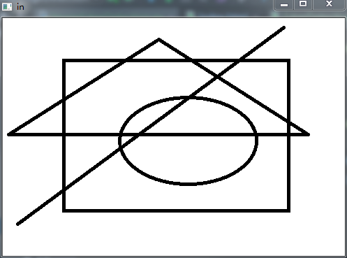
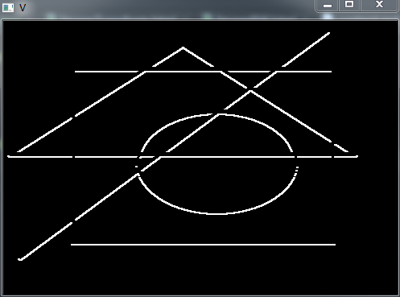
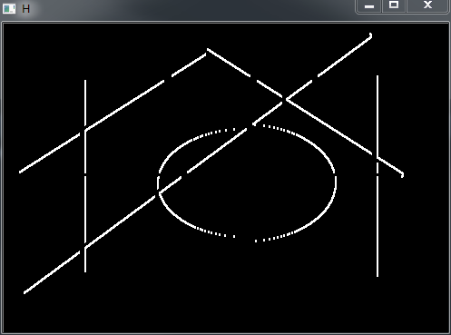
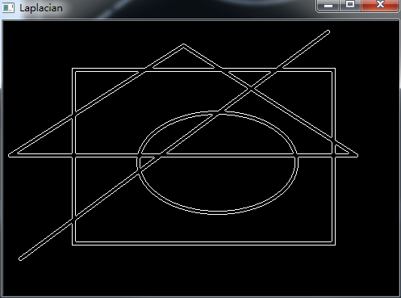
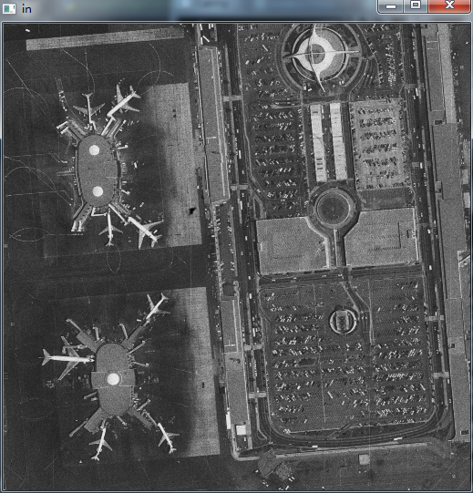
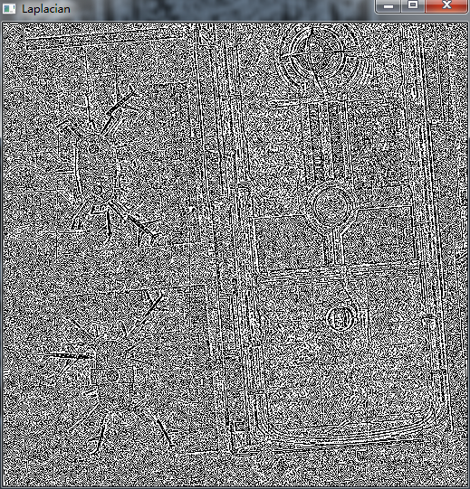
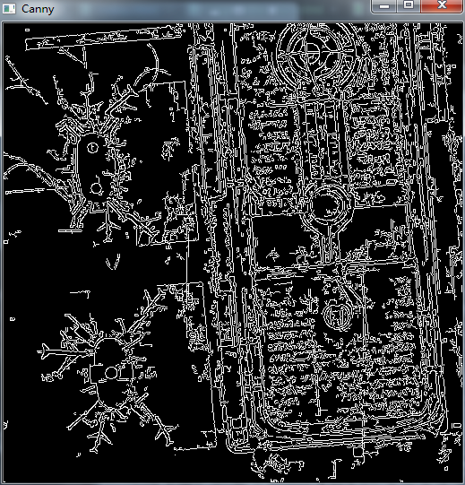

边缘检测
1.Blur
在图像处理中，我们把区域内引起灰度值大幅度变化的部分称为：高频。
Blur的作用类似于低通滤波 (Low Pass Filter) ，将区域内边缘部分平滑化，即去除高频部分。
Blur Kernel(3*3)
- 使用自定义 Kernel 对图像滤波
import cv2 as cv
import numpy as np
img = cv.imread("..\ImageSource\Sample\lena_color.tiff", 0)
cv.imshow("in", img)
kernel_3x3 = np.ones((3, 3), np.float)/9.0
img_out = cv.filter2D(img, -1, kernel_3x3)
cv.imshow("Blur_3x3", img_out)
Origin
Blur3x3
- 直接调用Blur函数
img_blur = cv.blur(img, (3, 3))
cv.imshow("Img_Blur", img_blur)
Blur()

2.Sobel
Sobel 一阶微分，提取轮廓
由于 Edge 会出现在 X,Y 方向上， Sobel 算子使用 X,Y 两个方向上的Kernel
使用这两个kernel对图像进行处理
img = cv.imread("..\ImageSource\shape.png", 0)
cv.imshow("in", img)
sobel_H = cv.Sobel(img, cv.CV_64F, 1, 0)
sobel_V = cv.Sobel(img, cv.CV_64F, 0, 1)
cv.imshow("H", sobel_H)
cv.imshow("V", sobel_V)
Origin

Vertical

Horizontal

可以明显看到，对两个方向上分别运算，结果会出现某个方向上的缺失。
使用二阶微分Laplacian算子，可以同时对两个方向上进行滤波
laplacian_img = cv.Laplacian(img, cv.CV_64F)
cv.imshow("Laplacian", laplacian_img)

在细节过于丰富的场景中， Canny Edge 比 Laplacian 有更好的表现
Origin

Laplacian

Canny

Canny edge detector 采用两个阈值来确定目标边缘。首先，如果梯度灰值大于 high threshold value ,就将此处标记为强边缘点，检测器将从此点出发，直到检测到梯度灰值小于 low threshold value 。 增大 high threshold value 会将弱边缘抛弃，过滤掉细节部分。
一些常用的滤波Kernel
Motion Blur
使用这种滤波算子，能使图片呈现出运动拍摄的感觉
Sharpening
锐化